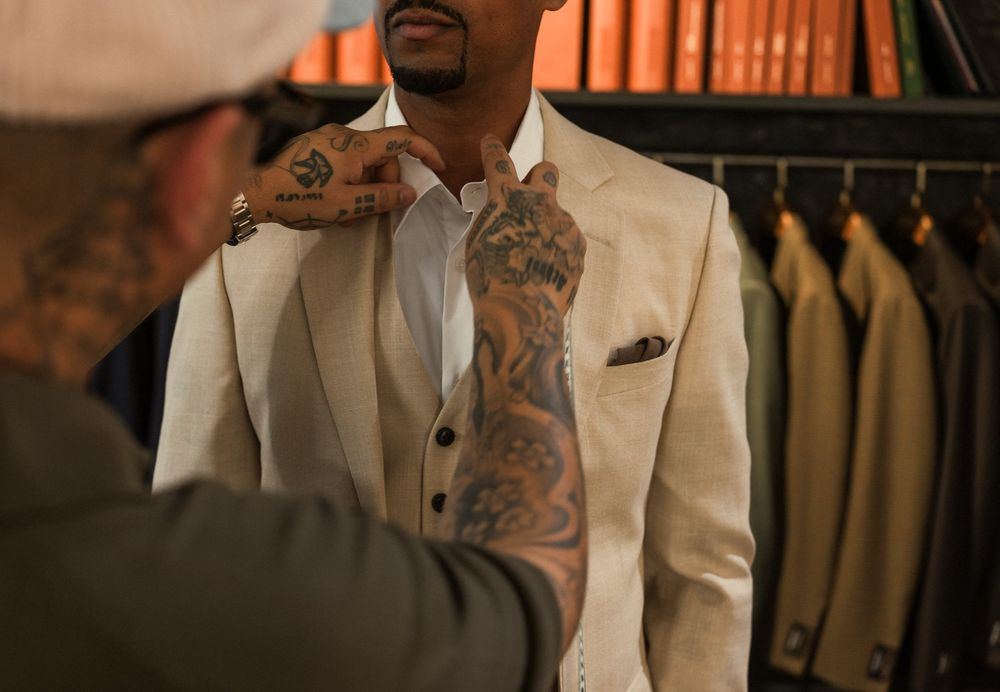
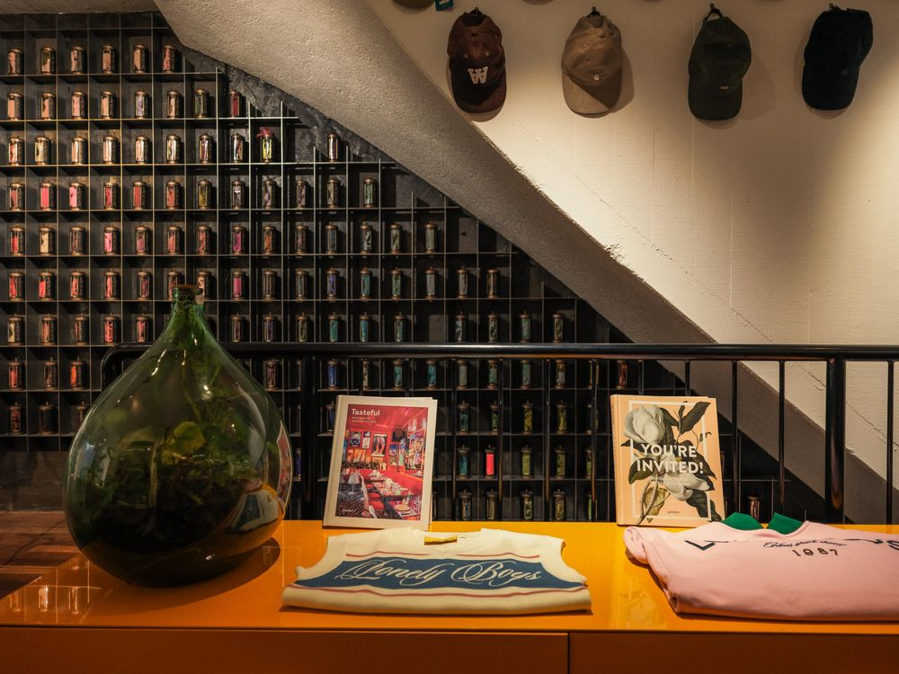
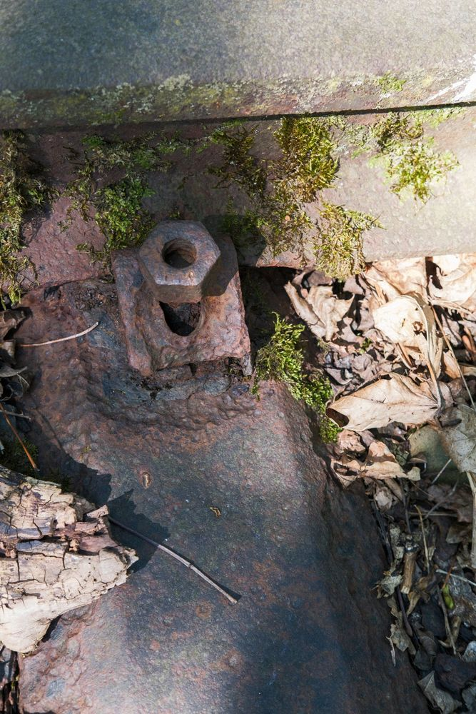
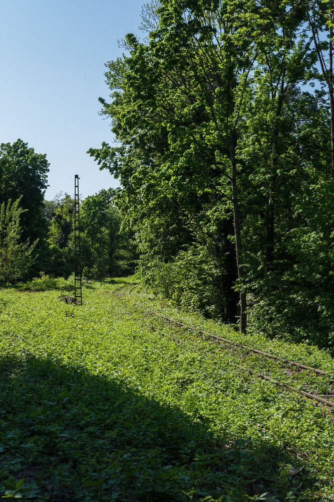
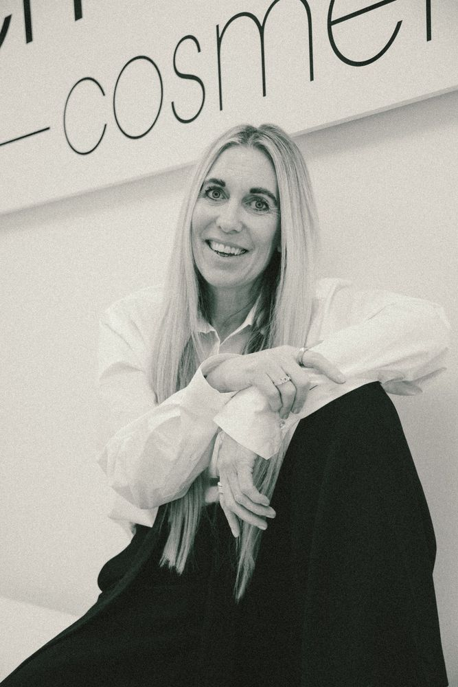
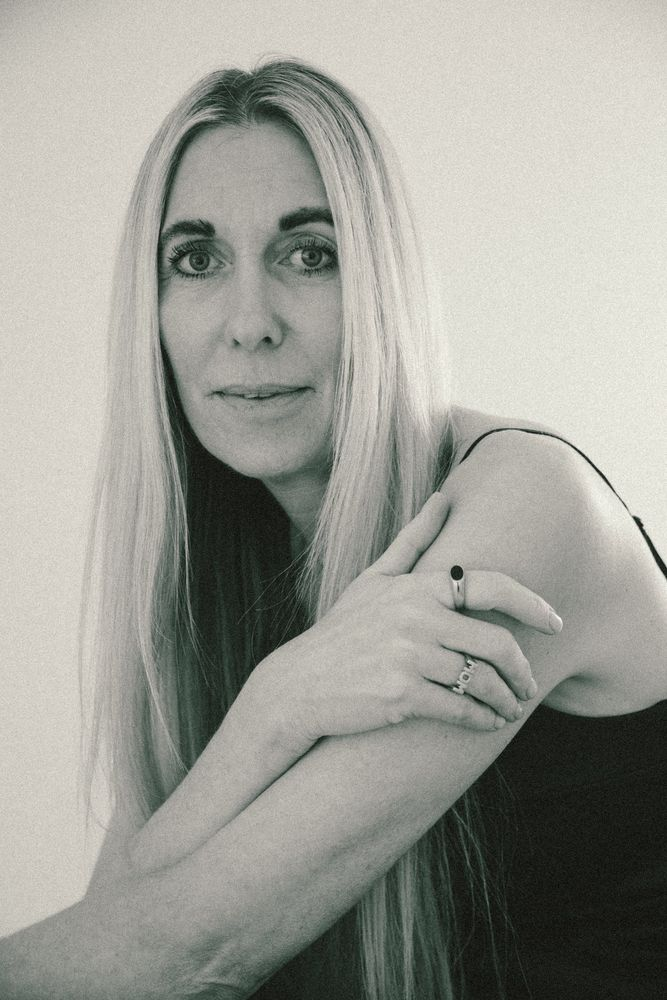
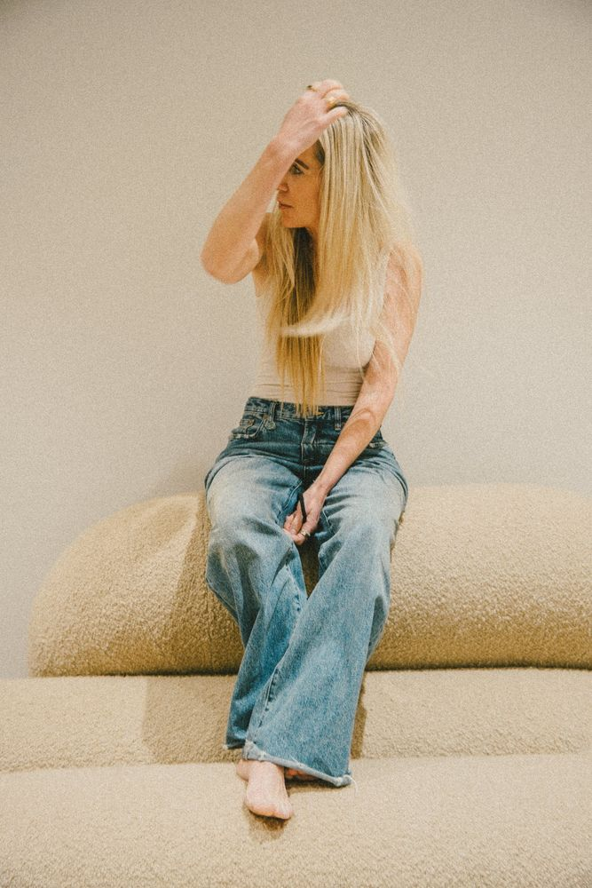

Raw, alle Bilder
Hermann Scherer, Kunstmuseum Basel Ausstellung, 2022Hermann Scherer, Kunstmuseum BaselAusstellung, 2022


 Colorful Neighbourhood Bildwelt, 2026
Colorful Neighbourhood Bildwelt, 2026




 Colorful Neighbourhood
Colorful NeighbourhoodBildwelt, 2026 Seven Purple Tigers Konzert, 2022


 Seven Purple Tigers
Seven Purple TigersKonzert, 2022 Dreiländereck Dokumentation, 2025






DreiländereckDokumentation, 2025 Schoonheid Cosmetics Porträt, 2025Schoonheid Cosmetics
Porträt, 2025






 Weine der Familie Eggimann Reportage, 2024
Weine der Familie Eggimann Reportage, 2024


 Weine der Familie Eggimann
Weine der Familie EggimannReportage, 2024 IMBIT Architektur, 2021


 IMBIT
IMBITArchitektur, 2021 Villa Hammer Architektur, 2019Villa Hammer
Architektur, 2019


 Création Baumann Werbung, 2020
Création Baumann Werbung, 2020


 Création Baumann
Création BaumannWerbung, 2020 Freie Arbeiten Freie Arbeit, 2017 bis 2026Freie Arbeiten
Freie Arbeit, 2017 bis 2026